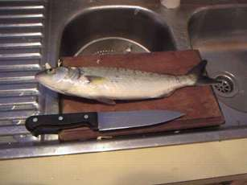

君よ知るや南の国
ニュージーランドの海の釣魚
皆さんこんにちは！
このページは、ニュージーランド北島は、ハミルトン市に住んでいる伊藤 剛 が、当地の釣りの風景、魚たちの横顔、生活のあれこれなどの四方山話を行き当たりバッタリに綴ってお届けします。
まず第一回は、ニュージーランドの海の釣魚の中から、日本でもおなじみの魚たちをご紹介いたします。今年の三月にハミルトンに引っ越してから、あまり海釣りをしていないのですが、それまで住んでいたオークランドの思い出も含めて書いてみます。
当地での海釣りの対象魚 （日本の魚で近い種類）
Snapper：スナッパー （マダイ）
やはりニュージーランドでもタイは一番人気のようです。磯・浜・船と、場所、釣り方を問わず大勢の釣り人が狙っています。漁業資源としても最も重要視されています。60cmを越えるような大物は、ちょっと顔つきがブ細工になっていくような気がします。
Kingfish：キングフィッシュ、キンギー （ヒラマサ）
タイと並ぶ大物釣りの対象魚、ルアーや生き餌で狙うことが多いようです。主に北島の海域で釣られています。場所によっては、地元の名人が桟橋から60cm級の大物を釣り上げることもあるそうです。
Trevally：トレバリー （トレバリー）
これもルアー、ジギングの対象として人気が高い。最大は80cm近くになります。キンギーやトレバリーは、暖かい北島北部、ベイオブアイランズやグレートバリアーアイランド近辺の釣り場が有名です。
Piper：パイパー （サヨリ）
磯の小物釣りではよくお目にかかるかわいい魚。銀色の鱗を輝かせて波間に見え隠れしています。オークランドあたりの浜では、20～25cmぐらいのパイパーがよく釣れます。たまにフライでも釣れることがあります。
Mackerel：マッカレル （サバ）
日本で言うところのサバですが、いろいろな種類があり、大きなものは70cmを越える。スポーツフィッシュとして人気が高い。
Kahawai：カウワイ （サバ？）
体型はサバに似ていますが、背鰭が長く、尾の近くまで続いています。

カウワイが沖合で群をなしている時には水面が沸騰するように見えます。味も良し、釣って良しの魚。魚肉、ルアー、小魚など、いろいろな餌で釣れる。もちろんフライでも。高速で泳ぐのでファイトは格別！ 私がニュージーランドの海で初めて釣った魚なので、思い入れがあります。
Flounder：フラウンダー （ヒラメ）
ニュージーランドには12種類ものフラウンダーがいるそうです。オークランドにいたときには、ルアーで釣れないかとさんざん狙いましたが、さっぱり釣れませんでした。再度挑戦してみたい魚です。ああぁ、煮付けが食べたい！
次回は、ニュージーランドならではの珍しい魚をご紹介します。
（参考文献： How to catch fish and where,
Bill Hohepa,Harlen Publishing, 1990）
君よ知るや南の国 目次へ
サイトマップ
ホームへ
お問い合わせ